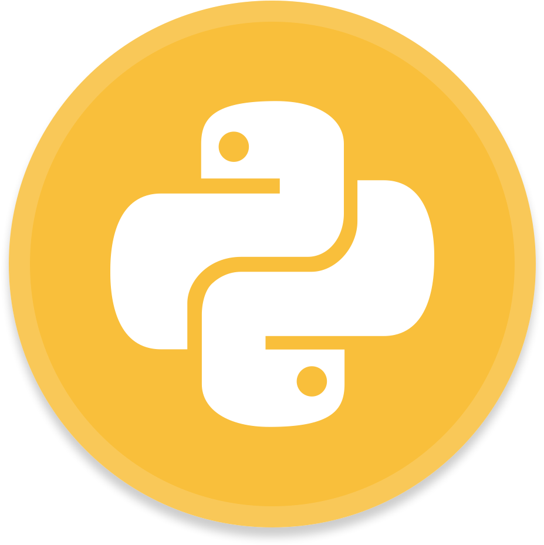

Noah Smiley
All Skills
A comprehensive list of my skills - in regards to both frontend and backend technologies.
All skills
 Python
Python is my strongest language - I have a deep understanding of Python 3 and the OOP principles within it. The majority of my personal and professional projects contain atleast some Python.
 JavaScript
JavaScript
JavaScript was the second language I learned, and I've grown to love it. I've made a Connect Four Game, and a number of web apps consisting mostly of JavaScript.
 Django
Django
The Django framework was the first web framework I had experience with, and is the one of most familiar with. My Course-Planner project was made using the Django framework.
 HTML5
HTML5
I have an ample amount of experience in regards to HTML, all of my web applications and connect four project were implemented with HTML5.
 CSS3
CSS3
In conjunction with HTML - I've stylized several projects using CSS3.
 jquery
jquery
Jquery was my first use of a JavaScript library, and subsequently my strongest one. I built my connect fsour project heavily using jquery.
 BootStrap4
BootStrap4
Bootstrap as a CSS framework has made my workflow much more effiecent in the development of the various web apps, and projects I've developed involving CSS, and through it's use - Bootstrap has improved my CSS effiecency greatly.